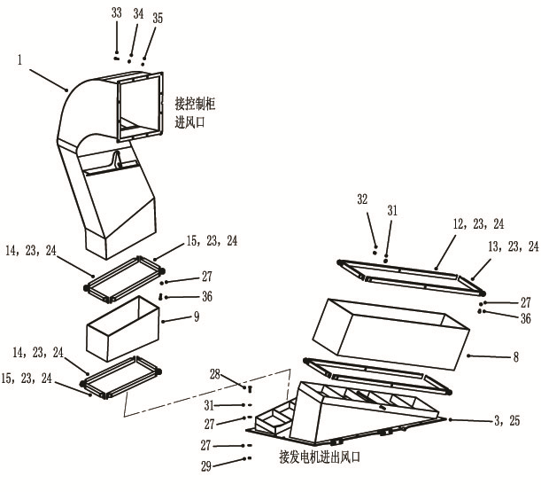
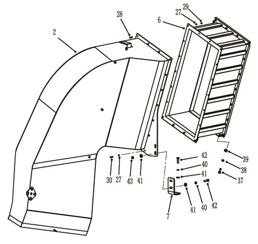
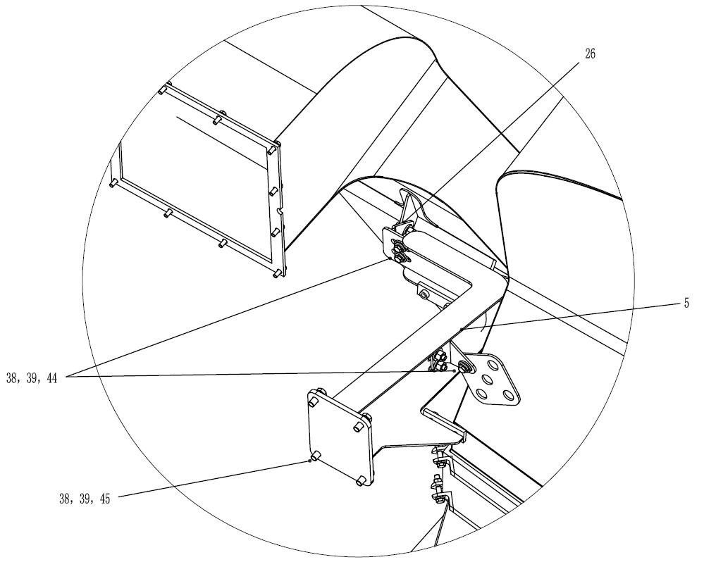
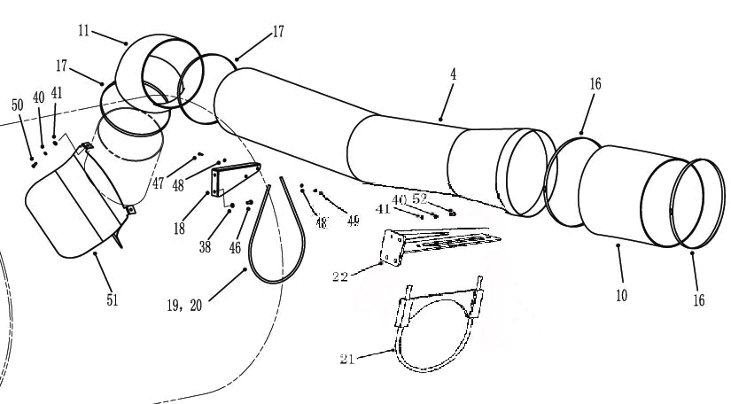

风冷却管路 · WIND COOLING LINES MOUNTING
Система охлаждения генератора переменного тока и электрических колес
Описание и расположение
Генератор переменного тока и система охлаждения электрических колес обеспечивают поток воздуха для генератора переменного тока и электрического колеса. Важными компонентами являются:
1. Воздуходувка - это воздуходувка с однорядным расположением двух рабочих колес, она устанавливается в хвостовой части тягового генератора переменного тока.
2. Трубопровод
Направление трубопровода:
a. От электрического шкафа управления к входу воздуходувки
b. От выхода воздуходувки к картеру моста и электромотор-колесам
c. Повышение давления и охлаждение компонентов от выхода в корпусе воздуходувки к электрическому шкафу управления.
Управление
Воздуходувка подает охлажденный воздух на электрическую часть главного тягового генератора переменного тока и электромотор-колес. Воздух всасывается в систему через большой воздухозаборник в сборе позади кабины и поступает через вход воздуходувки.
Лопасти воздуходувки непосредственно соединяются с валом ротора тягового генератора переменного тока. Когда рабочее колесо вращается, воздух нагнетается и подается в охлаждающие трубки. Воздух от одной комбинированной охлаждающей трубки непосредственно подается на генератор переменного тока и поступает в указанную зону, выпускает через специальные выходные решетки, расположенные по окружности корпуса генератора переменного тока. Другая комбинированная охлаждающая трубка через наружную сеть трубопроводов подсоединена к картеру заднего моста. Оттуда воздух подается на электромотор-колесо, выпускает в атмосферу через отверстие в крышке ступицы в сборе.
Часть потока наддувочного воздух отделяется и подается к электрическому шкафу управления в сборе. Результат прохождении воздушного потока через шкаф управления:
1. Охлаждение компонентов нескольких систем.
2. Повышение давления в картере моста, сведение к минимуму тепла, выделяющего в результате попадания пыли, загрязняющих веществ и действия системы, и других негативных влияний.
Техническое обслуживание и регулировка
Техническое обслуживание и регулировка
1. Проверьте корпус воздуходувки на наличие ослабления или недостатков деталей. Отремонтируйте или замените в соответствии с требованиями.
2. Проверьте корпус воздуходувки на наличие заметных дефектов или трещин. Отремонтируйте или замените в соответствии с требованиями, указанными в инструкции по ремонту электрической системы.
3. Проверить все трубы на наличие повреждений или утечек. По мере необходимости отремонтировать или замените его. Использовать уплотнения RTV по периметру всех соединений труб, чтобы обеспечить надлежащую герметизацию.
4. Проверьте, открыто ли вентиляционное отверстие диаметром 1/2 дюйма (12 мм) в задней нижней части корпуса воздуходувки.
Примечание: важно помнить, что для достижения желаемого эффекта охлаждения всегда имеется подходящий и достаточный поток воздуха. Несохранение такого воздушного потока приведет к сокращению срока службы компонента.
Силовая система-система охлаждения генератора переменного тока и электрических колес
040-0080
Силовая система-система охлаждения генератора переменного тока и электрических колес
040-0080
28
1
Силовая система-система охлаждения генератора переменного тока и электрических колес
040-0080
1
Силовая система-система охлаждения генератора переменного тока и электрических колес
040-0080
Силовая система-система охлаждения генератора переменного тока и электрических колес
040-0080
4
Силовая система-система охлаждения генератора переменного тока и электрических колес
040-0080
5
Дополнения - Масса компонентов
200-0090
Дополнения - Масса компонентов
200-0090
6
43
Дополнения - Масса компонентов
200-0090
Присоединение к воздухозаборному отверстию шкафа управления
Присоединение к воздухозаборному отверстию и воздуховыпускному отверстию генератора
1Воздуховод охлаждения шкафа управления19Цепь37Болт2Подводящий воздуховод генератора20Муфта38Пружинная шайба3Воздуховод21Зажим типа седла39Шайба4Воздуховод22Кронштейн в сборе40Пружинная шайба5Опора в сборе23Резиновая лента41Шайба 6Воздухозаборникв сборе24Клей42Болт7Кронштейн25Резина RTV43Гайка8Прямоугольный гибкий воздуховод26Кронштейн44Болт9Прямоугольный гибкий воздуховод27Шайба45Болт10Гибкий воздуховод28Болт46Болт11Гибкий воздуховод29Гайка47Болт12Зажим воздуховода30Болт48Шайба13Зажим воздуховода31Шайба49Гайка14Зажим воздуховода32Самоконтрящаяся гайка50Болт15Зажим воздуховода33Болт51Шунтовая планка16Хомут34Пружинная шайба52Болт17Хомут35Шайба18Кронштейн36Болт
Иллюстрации



